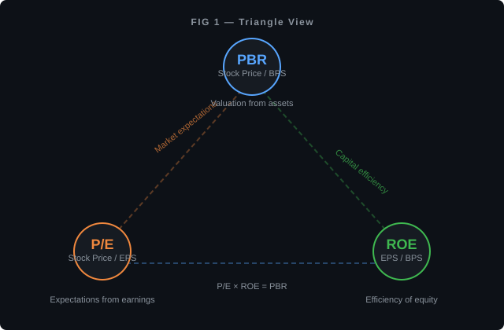
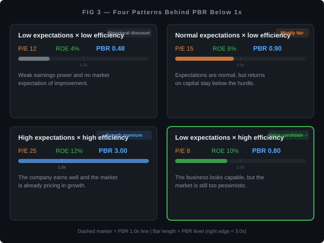

PBR — Why "Below Book Value" Doesn't Mean Cheap¶
For / Key Points
For: Those who read the previous P/E ratio article and are now wondering, "Can I also check whether a stock price is cheap or expensive relative to the company's assets, not just its earnings?"
Key Points:
- PBR measures stock price relative to the company's "belongings" — if P/E asks "how much for this level of earnings?", PBR asks "how much for this level of assets?"
- "Below book value = bargain" is often wrong. The amount in the books and the amount you'd actually get by selling are two different things
- PBR = P/E × ROE lets you isolate the cause — decompose "why does this stock look cheap?" into capital efficiency and market expectations
What PBR Is — Start with the Concept, Not the Name¶
In the previous article, we established that P/E is "stock price ÷ earnings per share" — a way to see how many times the company's earnings the stock price represents.
This time, we shift the perspective. Instead of earnings, we look at how many times the company's "belongings" the stock price represents.
A company owns various things: cash, factories, land, inventory, other companies' shares. Subtract all debts from those assets and you get what's left over — the portion of assets that belongs to shareholders on the books, called net assets (or book value). This is strictly a number on the books, not "the amount shareholders would get if the company liquidated right now" (more on this shortly).
Divide net assets by the number of shares outstanding and you get Book Value Per Share (BPS) — roughly, "how much in assets the company holds per share."
Stock price divided by BPS gives you PBR (Price Book-value Ratio).
For example, if a company's BPS is ¥500 and the stock trades at ¥750, PBR is 1.5x. If the stock is ¥400, PBR is 0.8x.
PBR of 1x means the stock price exactly equals the per-share book value of the company's assets. When PBR drops below 1 — the stock is cheaper than book value — it's called "trading below book."
So far, intuitive. The problem starts here.
Is "Cheaper Than Book Value = Bargain" Actually True?¶
If PBR is below 1 — meaning "the stock price is lower than the company's book value per share" — it looks like a deal. In theory, you could shut the company down, sell everything, and get back more than you paid for the stock.
But the amount on the books is not "the amount you'd actually receive from selling."
Consider factories and equipment. A manufacturer's specialized machinery is recorded on the books at the original purchase price minus depreciation. But try selling it and there's no guarantee anyone will pay that amount. Specialized equipment might fetch only a fraction of its book value.
"Goodwill" from M&A is another example. Goodwill is the premium paid when acquiring another company — the amount above the target's book value, representing intangible qualities like brand strength, technology, and customer relationships. It sits on the books as part of net assets, but you can't easily separate and sell it to someone else.
Accounting standards differ significantly in how they treat goodwill. Under IFRS, goodwill isn't amortized annually but is subject to at least annual impairment testing. Under Japanese GAAP, it's amortized over up to 20 years. The same acquisition produces different book values depending on the standard.
Inventory isn't always worth face value either. Products in the warehouse are recorded at cost. But if they become obsolete, they won't sell at that price. When the company records an inventory write-down, book value drops sharply.
The takeaway: book value is not a "guaranteed liquidation value." Concluding that "there's a floor on the stock price" just because PBR is below 1 is premature — until you've examined what's actually in the books.
What Does "Below Book" Actually Signal?¶
If it's not "a bargain," then what does PBR below 1 represent?
Here's the equation that connects P/E (expectations relative to earnings) with PBR (stock price relative to assets):
Note: ROE is entered as a decimal (10% ROE = 0.10). The periods and definitions for P/E and ROE must align.
A new term requires explanation. ROE (Return on Equity) measures "how much profit the company generated using the money shareholders entrusted to it." It's the ratio of profit to net assets — essentially a report card on how well the company uses its capital.
Where does this equation come from?
P/E = Stock Price ÷ EPS. ROE = EPS ÷ BPS. Multiply these two and EPS cancels out, leaving Stock Price ÷ BPS = PBR. In other words, PBR was always the product of P/E and ROE.

Through this lens, PBR below 1 can occur in broadly four patterns:
| Pattern | P/E (Expectations) | ROE (Efficiency) | PBR | In a nutshell |
|---|---|---|---|---|
| Low expectations, low efficiency | 12x | 4% | 0.48x | Weak earning power, market expects nothing |
| Normal expectations, low efficiency | 15x | 6% | 0.90x | Capital efficiency is insufficient |
| High expectations, high efficiency | 25x | 12% | 3.00x | Earns well and growth is priced in |
| High efficiency, low expectations | 8x | 10% | 0.80x | Strong fundamentals, but market is pessimistic |

Only the fourth pattern is a potential "undervalued candidate" — the company has capability (high ROE) but the market is underestimating it for some reason.
The first pattern isn't cheap — it's "fair." If the company isn't using shareholders' capital effectively (low ROE), it's not surprising that the stock price sits below book value.
PBR below 1 is not a "buy signal." It's the market asking: "Is this company failing to use its capital productively?" or "Is there any reason to expect growth?" That framing is closer to reality.
Why the Tokyo Stock Exchange Flagged PBR¶
In March 2023, the Tokyo Stock Exchange (TSE) issued a request to all Prime and Standard-listed companies to pursue "management conscious of cost of capital and stock price." The particular concern: companies whose PBR had persistently remained below 1x.
"Cost of capital" here means the return level that shareholders expect the company to deliver. When companies estimate and disclose their cost of capital, figures in the 7–8% range are common, though the number varies with assumptions about risk.
When ROE falls below the cost of capital, it means "the company is delivering results below what shareholders expect." If this persists, the market stops expecting improvement, and PBR sinks below 1.
The TSE's message wasn't "raise your stock price" — it was "raise your capital efficiency." If ROE improves, PBR rises through the equation PBR = P/E × ROE, even if P/E stays the same.
Where PBR Doesn't Work Well¶
Just as P/E had its "doesn't work for money-losing companies" limitation, PBR has situations where it misleads.
Tech companies and consulting firms. Their real strengths — knowledge, algorithms, brand — live in people's heads, not on the balance sheet. BPS ends up small, and PBR runs permanently high. "PBR of 5x, must be overvalued" doesn't hold.
Banks, insurers, and brokerages. Most of their assets are money itself (loans and securities), so book value tracks actual value relatively closely. The flip side: PBR below 1 for a financial institution can be more serious than for other sectors. The market may be questioning the quality of the assets on the books.
Companies in negative equity (liabilities exceeding assets). When net assets go negative, BPS goes negative, and PBR produces a meaningless number. Same structural failure as P/E with loss-making companies.
Companies that recently completed large acquisitions. Goodwill inflates book value, making PBR appear deceptively low. But as noted above, goodwill is hard to liquidate — so that "cheapness" shouldn't be taken at face value.
What Distorts Book Value¶
BPS — the denominator of PBR — can be pushed above or below reality by accounting treatments.
Unrealized gains on land. Some companies still carry urban land purchased decades ago at the original acquisition cost. The market value may be several times higher, but this isn't reflected in book value. In these cases, PBR looks more expensive than reality.
However, stocks (investment securities) work differently. Some equity holdings are marked to market at each reporting period, with the difference flowing into net assets. So even though both land and stocks can have "unrealized gains," their impact on the books differs. You need to look at what's in net assets, not just the total.
Cross-shareholdings. A common practice among Japanese companies: holding trading partners' shares "to maintain the relationship." These are counted in net assets on paper, but selling them would damage business ties — making them effectively frozen capital.
Share buybacks. When a company repurchases its own shares, book value decreases (the repurchased amount is subtracted from net assets). This lowers BPS and pushes PBR up. While buybacks can be an effective tool for improving capital efficiency, a rising PBR doesn't necessarily mean the company's actual capability has improved.
How to Use PBR — Don't Look at It Alone¶
Like P/E, PBR is not an indicator that yields conclusions from a single number.
Compare within the same industry. The comparison only works between companies with similar asset compositions. Lining up PBR for a tech company and a manufacturer tells you little.
Decompose with P/E × ROE. When you find PBR below 1, check: "Is P/E low (low market expectations), is ROE low (poor efficiency), or both?"
| Cause of PBR < 1 | First check | How to think about it |
|---|---|---|
| Low ROE (efficiency problem) | Does the company have concrete improvement plans? | Without a plan, "cheap forever" is likely |
| Low P/E (low expectations) | Is the pessimism temporary or structural? | If temporary, is there a catalyst for re-rating? |
| Both | Is this an industry-wide problem or company-specific? | Industry headwinds are hard for one company to overcome |
Compare against the company's own history. Look at the current PBR versus the 5-year average. But large acquisitions or business pivots can invalidate historical comparisons.
Recalculate excluding goodwill. Some financial data services provide "Tangible Book Value." For companies where goodwill dominates net assets, this adjustment can completely change the PBR picture.
Takeaways¶
- PBR measures "how many times the company's book value the stock price represents" — the asset axis to P/E's earnings axis
- Book value and actual liquidation value don't match. PBR below 1 ≠ bargain
- PBR = P/E × ROE decomposes "why it looks cheap" into capital efficiency (ROE) and market expectations (P/E)
- PBR reads differently for tech companies, financial institutions, and post-acquisition companies
- Unrealized land gains, mark-to-market securities, cross-shareholdings, and buybacks all distort book value
With the previous article's P/E (expectations relative to earnings) and this article's PBR (stock price relative to assets), two axes are now in place: "expensive or cheap relative to earnings" and "expensive or cheap relative to assets." Neither indicator, on its own, answers "buy or sell." What indicators show is "how market participants currently see things" — whether that view is correct is a separate question entirely.
Next, we'll examine the quality of EPS itself — the denominator of P/E. The same profit figure can mean very different things. Buybacks, one-time special gains, accounting standard differences — building the eye to distinguish earnings "quality."